메타분석
Zarathu Co., Ltd
2026-02-03
자기소개
회사: 차라투 (Zarathu Co.,Ltd)
- R 활용 의학연구지원
- R 패키지 개발 및 교육
경력
- 의학사, 성균관대학교 (~2009)
- 예방의학전문의/박사수료,서울대보건대학원 (~2013)
- 책임, 삼성전자 DMC연구소/무선사업부 (~2016)
- 대표, 차라투 (2018~)
jinseob2kim@gmail.com, github.com/jinseob2kim
Executive summary
동일한 결과지표를 가진 연구들을 합친다
Mean, proportion: 그룹 1개
Ratio(RR, OR, ROM), difference(MD, SMD): 그룹 2개 비교
그룹별 Mean(sd) 또는 Event/N 값이 필요, Measure(95%CI) 만 있어도 가능.
Inversed variance: Fixed effect vs Random effect
- 분산이 작은 연구에 가중치를 주지만, 한 연구의 영향력이 너무 커지는건 싫다.
Forestplot 으로 표시한다
- 검증위해
funnel plot, heterogeneity 지표 필요
openstat.ai 에서 메타분석 수행 가능
- R meta 패키지로도 구현가능
Systematic review
사실 포함해야 할 연구들을 고르는게 가장 어렵다.
같은 연구주제
인구집단이 너무 차이나면 안됨(서양 vs 동양, 소아 vs 노인, 남 vs 여)
같은 결과지표: Mean과 Median, Ratio 와 Difference를 합칠 순 없다.
PRISMA Flow Diagram
연구 선정 과정을 투명하게 보여주는 표준 flowchart
Identification DB 검색 (n=1000) + 기타 (n=50)
↓
중복 제거 (n=800)
↓
Screening 제목/초록 검토 → 제외 (n=500)
↓
Eligibility 전문 검토 (n=300) → 제외 (n=250)
↓
Included 최종 포함 (n=50)- 저널 투고시 거의 필수
- PRISMA 공식 사이트에서 템플릿 제공
Risk of Bias (ROB)
포함된 연구들의 질(Quality) 평가
| Study | 무작위배정 | 배정은닉 | 눈가림 | 결측 | 선택보고 |
|---|---|---|---|---|---|
| A | 🟢 | 🟢 | 🟡 | 🟢 | 🟢 |
| B | 🟢 | 🟡 | 🔴 | 🟢 | 🟢 |
| C | 🟢 | 🟢 | 🟢 | 🟡 | 🟢 |
| D | 🟡 | 🔴 | 🔴 | 🟢 | 🟢 |
🟢 Low risk / 🟡 Unclear / 🔴 High risk
- RCT: Cochrane ROB 2.0
- 관찰연구: Newcastle-Ottawa Scale (NOS)
Risk of Bias: 실제 예시
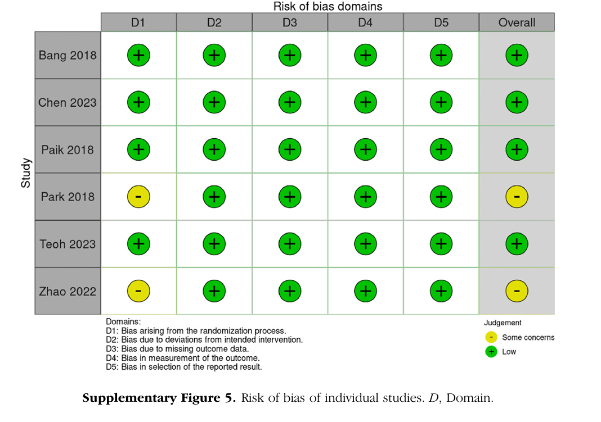지표 종류
1그룹 단일지표
Mean(sd), event/N(%)
Median은 불가능(?) : 최신 방법론 필요
2그룹 비교: 대부분
Mean: Difference, ratio
event/N(%): Ratio(RR, OR), Difference(RD)
어떤 지표든 Measure값과 S.E(or 95%CI) 가 있으면 가능
Mean difference (MD)
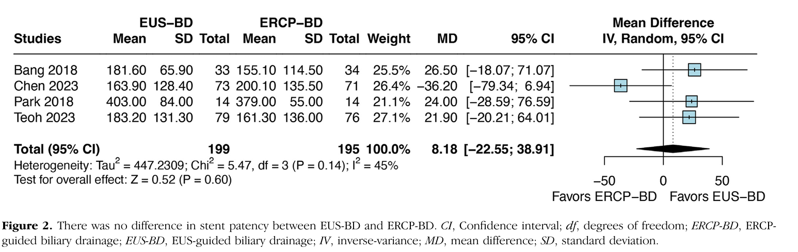MD vs SMD
MD (Mean Difference)
- 평균 차이 그대로
- 같은 단위 사용할 때
SMD (Standardized MD)
- 평균 차이를 SD로 나눔
- 다른 척도 합칠 때
\[SMD = \frac{\bar{X}_T - \bar{X}_C}{S_{pooled}}\]
| Cohen’s d | 해석 |
|---|---|
| 0.2 | Small |
| 0.5 | Medium |
| 0.8 | Large |
Relative risk(Risk ratio)
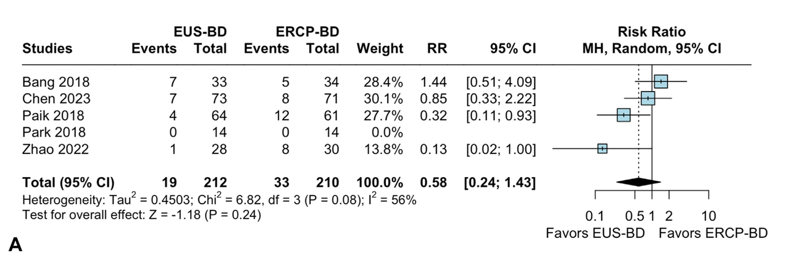RR, OR, RD: 2x2 테이블
| Disease+ | Disease- | ||
|---|---|---|---|
| Treatment | a | b | a+b |
| Control | c | d | c+d |
RR (Risk Ratio)
\[\frac{a/(a+b)}{c/(c+d)}\]
위험률의 비율
OR (Odds Ratio)
\[\frac{a/b}{c/d} = \frac{ad}{bc}\]
오즈의 비율
RD (Risk Difference)
\[\frac{a}{a+b} - \frac{c}{c+d}\]
위험률의 차이
RR, OR, RD: 예시
| 사망 | 생존 | ||
|---|---|---|---|
| 신약 | 10 | 90 | 100명 (10%) |
| 위약 | 20 | 80 | 100명 (20%) |
RR = 0.1 / 0.2 = 0.5 → “신약 쓰면 사망위험 절반”
OR = (10×80) / (90×20) = 0.44 → RR과 비슷 (희귀질환일수록 유사)
RD = 0.1 - 0.2 = -0.1 → “10%p 사망 감소”, NNT = 10
RR, OR, RD: 언제 쓰나?
| 지표 | 장점 | 주 사용처 |
|---|---|---|
| RR | 가장 직관적 (“몇 배”) | RCT, 코호트 |
| OR | Case-control에서 유일하게 계산 가능 | Case-control, 로지스틱 회귀 |
| RD | 절대 효과크기, NNT 계산 | 임상적 의사결정 |
Note
희귀 질환(발생률 < 10%)에서는 OR ≈ RR
Case-control 연구란?
코호트: 노출군/비노출군 모아서 → 질병 발생 추적
Case-control: 질병O(case)/질병X(control) 모아서 → 과거 노출 조사
코호트 (전향적)
흡연자 1000명 → 폐암 50명
비흡연자 1000명 → 폐암 5명발생률 계산 가능!
Case-control (후향적)
폐암 100명 ← 흡연 80명
정상 100명 ← 흡연 20명case:control 비율은 연구자 맘대로
Case-control에서 왜 RR 안됨?
| 폐암 | 정상 | ||
|---|---|---|---|
| 흡연 | 80 | 20 | 100 |
| 비흡연 | 20 | 80 | 100 |
RR = (80/100) / (20/100) = 4? ❌
100명, 100명은 연구자가 정한 숫자일 뿐, 실제 흡연자/비흡연자 수가 아님!
\[\text{OR} = \frac{a/b}{c/d} = \frac{a/c}{b/d} = \frac{ad}{bc} = 16 \]
\(\frac{a/b}{c/d}\): 노출군 오즈 / 비노출군 오즈 → 코호트 관점
\(\frac{a/c}{b/d}\): case 노출률 / control 노출률 → case-control 관점
둘 다 ad/bc → OR은 코호트, case-control 둘 다 사용 가능!
Event/N 없다면?
- 어떤 지표든 그 추정값과 95%CI(또는 standard error) 만 있으면 됨.
HR(Hazard ratio)
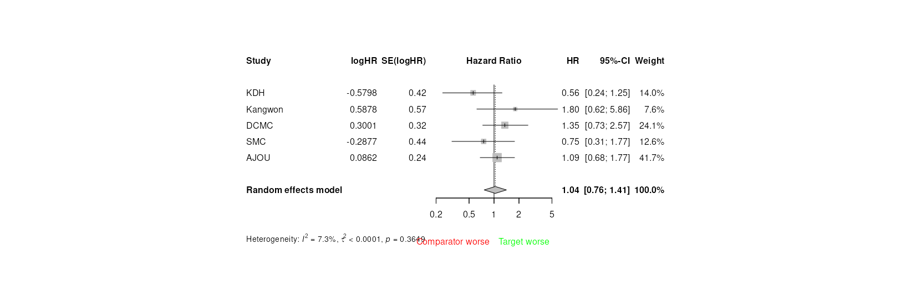메타분석 계산: Fixed Effect Model
개별 연구를 가중 평균으로 합친다
\[\hat{\theta}_{pooled} = \frac{\sum w_i \hat{\theta}_i}{\sum w_i}\]
- \(\hat{\theta}_i\): 각 연구의 추정값 (MD, log OR, log RR 등)
- \(w_i\): 가중치 (정밀한 연구에 큰 가중치)
가중치 계산 방법이 2가지
| 데이터 | 방법 | 가중치 |
|---|---|---|
| Mean(sd), N | IV (Inverse Variance) | \(w_i = 1/Var_i\) |
| 2×2 테이블 | MH (Mantel-Haenszel) | 테이블 기반 공식 |
IV (Inverse Variance) 방법
분산의 역수 = 가중치
\[w_i = \frac{1}{Var(\hat{\theta}_i)}\]
- 분산 작은(정밀한) 연구 → 가중치 큼
- 연속형(MD, SMD)에서 기본 사용
- 범용적: 추정값 + SE만 있으면 다 가능
Mean difference 예시
\[Var(MD) = \frac{s_1^2}{n_1} + \frac{s_2^2}{n_2}\]
MH (Mantel-Haenszel) 방법
2×2 테이블 직접 이용 (log 변환 없이)
| Event | No Event | ||
|---|---|---|---|
| Treatment | a | b | n1 |
| Control | c | d | n2 |
OR의 MH 가중치
\[w_i = \frac{b_i c_i}{n_{1i} + n_{2i}}\]
- 이벤트 적은 sparse data에 robust
- 이분형(RR, OR, RD) 기본 방법
2×2 테이블도 IV로 가능
log 변환하면 IV 사용 가능!
\[\log(OR) = \log\left(\frac{ad}{bc}\right)\]
\[Var(\log OR) = \frac{1}{a} + \frac{1}{b} + \frac{1}{c} + \frac{1}{d}\]
| 방법 | 장점 | 단점 |
|---|---|---|
| MH | sparse data에 강함, 직관적 | 2×2 테이블 필요, Fixed만 |
| IV | 범용적, Fixed + Random 둘 다 | 0셀 있으면 보정 필요 |
Tip
Random effect는 IV 기반 (τ² 추정이 IV 기반이라서)
Fixed Effect의 문제점
가정: 모든 연구의 true effect가 동일하다
\[\theta_1 = \theta_2 = \cdots = \theta_k = \theta\]
문제: SE 작은 연구가 가중치 독식
| 연구 | 효과 | SE | 가중치 (1/Var) |
|---|---|---|---|
| A (n=10000) | 0.8 | 0.05 | 400 |
| B (n=100) | 1.5 | 0.5 | 4 |
| C (n=100) | 1.3 | 0.5 | 4 |
→ 연구 A가 결과의 98%를 결정!
Random Effect Model
가정: 각 연구의 true effect가 다를 수 있다
\[\theta_i \sim N(\mu, \tau^2)\]
- \(\mu\): 전체 평균 효과
- \(\tau^2\): 연구 간 분산 (between-study variance)
가중치에 τ² 추가
\[w_i^{RE} = \frac{1}{Var_i + \tau^2}\]
→ 큰 연구의 가중치 독식 완화!
Fixed vs Random 비교
| Fixed | Random | |
|---|---|---|
| 가정 | 모든 연구 true effect 동일 | 연구마다 다를 수 있음 |
| 가중치 | \(1/Var_i\) | \(1/(Var_i + \tau^2)\) |
| 큰 연구 | 가중치 독식 가능 | 완화됨 |
| 일반화 | 포함된 연구에만 | 더 넓은 모집단에 |
Important
현재 추세: Random effect를 기본으로 사용
연구들이 완전히 동일할 수 없으므로 보수적인 Random 선호
Heterogeneity 지표
연구들이 얼마나 다른가?
1. Q statistic (Cochran’s Q)
\[Q = \sum w_i (\hat{\theta}_i - \hat{\theta}_{pooled})^2\]
- 카이제곱 분포, df = k-1
- p < 0.05 → 이질성 있음 (but 검정력 낮음)
2. I² (가장 많이 씀)
\[I^2 = \frac{Q - (k-1)}{Q} \times 100\%\]
- 전체 변동 중 연구 간 차이가 차지하는 비율
I² 해석
| I² | 이질성 정도 |
|---|---|
| 0-25% | 낮음 (Low) |
| 25-50% | 중간 (Moderate) |
| 50-75% | 높음 (Substantial) |
| 75-100% | 매우 높음 (Considerable) |
3. τ² (tau-squared)
- 연구 간 분산의 절대값
- I²는 비율, τ²는 실제 크기
Note
I² 높으면 → subgroup 분석, meta-regression 고려
R 결과 화면
Number of studies: k = 5
Number of observations: o = 1046 (o.e = 532, o.c = 514)
Number of events: e = 227
OR 95%-CI z p-value
Common effect model 0.7066 [0.5260; 0.9491] -2.31 0.0211
Random effects model 0.7417 [0.4609; 1.1936] -1.23 0.2183
Quantifying heterogeneity (with 95%-CIs):
tau^2 = 0.0888 [0.0000; 4.5875]; tau = 0.2981 [0.0000; 2.1418]
I^2 = 30.8% [0.0%; 73.4%]; H = 1.20 [1.00; 1.94]
Test of heterogeneity:
Q d.f. p-value
5.78 4 0.2159
Details of meta-analysis methods:
- Mantel-Haenszel method (common effect model)
- Inverse variance method (random effects model)
- Restricted maximum-likelihood estimator for tau^2
- Q-Profile method for confidence interval of tau^2 and tau
- Calculation of I^2 based on QForestplot
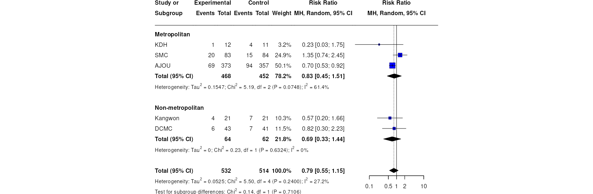Forestplot 해석
메타분석의 대표 시각화
- 각 연구: 점(효과 크기) + 선(95% CI)
- 점 크기 = 가중치 (클수록 영향력 큼)
- 다이아몬드 = pooled estimate (폭 = 95% CI)
- 세로선 = null effect (OR=1, RR=1, MD=0)
Tip
다이아몬드가 세로선과 안 겹치면 → 통계적으로 유의
Funnel plot
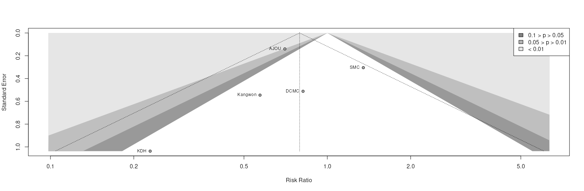Funnel plot 해석
Publication bias 확인용
- X축: 효과 크기 (OR, RR 등)
- Y축: SE (위로 갈수록 정밀한 연구)
| 모양 | 해석 |
|---|---|
| ✅ 대칭 | bias 없음 |
| ❌ 비대칭 | publication bias 의심 |
→ 유의하지 않은 작은 연구가 출판 안 돼서 한쪽이 비는 현상
통계 검정: Egger’s test, Begg’s test (연구 < 10개면 검정력 부족)
Drapery plot (필수는 아님)
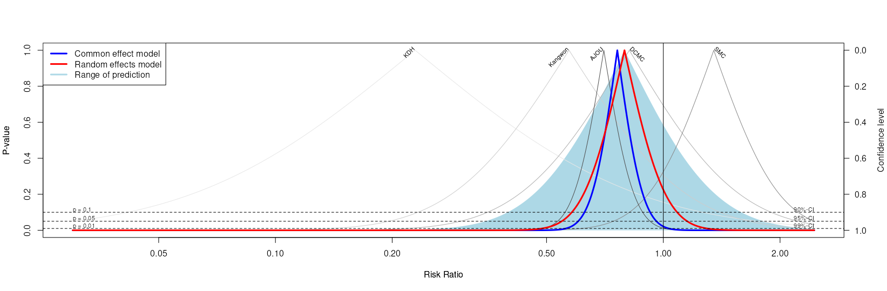- 각 연구의 p-value function을 연속적으로 표시
- 0.05에만 집착하지 않고 다양한 α에서 해석 가능
심화: Egger’s test
Funnel plot 비대칭의 통계 검정
\[\frac{\hat{\theta}_i}{SE_i} = \beta_0 + \beta_1 \cdot \frac{1}{SE_i}\]
- 효과크기를 SE로 나눈 값(standardized effect)을 1/SE에 회귀
- H₀: \(\beta_0 = 0\) (절편 = 0이면 대칭)
- p < 0.05 → funnel plot 비대칭 → publication bias 의심
Warning
한계: 연구 수 < 10개면 검정력 부족, 이질성 높으면 위양성
심화: Trim & Fill method
Publication bias 보정 방법
Step 1: Trim
- 비대칭 유발하는 연구들 제거
- 대칭이 될 때까지 반복
Step 2: Fill
- 제거한 연구의 “거울상” 가상 연구 추가
- 대칭적인 funnel plot 완성
Before After (Fill)
● ●
● ● ● ●
● ● ● ●
● ● → ● ◐ ●
● ● ◐ ●
◐
(비대칭) (대칭 + 가상연구)보정된 pooled estimate 제시 → 원래 결과와 비교
심화: 이번 강의에서 제외
Meta-regression
- I² 높을 때: 이질성의 원인을 찾고 싶다
- 연구 특성(출판년도, 평균나이, 용량 등)을 공변량으로 회귀분석
- 예: “출판년도가 최근일수록 효과가 작아지는가?”
Network Meta-analysis (NMA)
- A vs B, B vs C 연구는 있는데 A vs C는 없다?
- 간접 비교로 A vs C 추정 가능
- 여러 치료법을 순위로 비교 (SUCRA)
A ─── B
\ /
\ /
C실습: openstat.ai
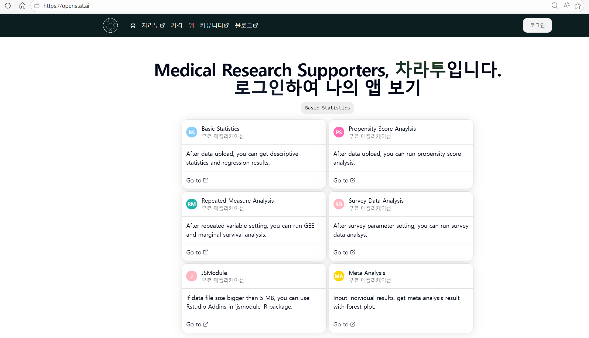실습: R
R에서 메타분석을 하기 위해서는 meta 패키지 필요
다음 코드를 통해 meta패키지를 설치해봅시다.
실습: meta 패키지의 기능(1)
meta 패키지 내의 각종 method 소개
연속형 자료의 메타분석 -> metacont
이진형 자료의 메타분석 -> metabin
메타분석에서 IV 방법 사용할 때 -> metagen
실습: meta 패키지의 기능(2)
meta 패키지 내의 각종 method 소개
상관관계에 대한 메타분석 -> metacor
평균에 대한 메타분석 -> metamean
비율에 대한 메타분석 -> metaprop
발생률에 대한 메타분석 -> metarate
실습: meta 패키지의 기능(3)
meta 패키지 내의 각종 method 소개-plot
Forest plot -> forest.meta, forest.metabind
Funnel plot -> funnel.meta
Drapery plot -> drapery
예제 데이터 소개: woodyplants
meta 패키지의 내장 데이터
주제: 대기 중 CO2 농도 증가가 목본식물(Woody Plants)의 성장에 미치는 영향
변수: 바이오매스(Biomass, 무게)
실험군(Experimental) : CO2 농도 높음
대조군(Control): 일반 대기 상태
특이사항: 다양한 종(Species)이 섞여 있음->식물들의 scale차이가 존재
예제 데이터 소개: woodyplants

Scale 차이를 고려하지 않았을 때-MD
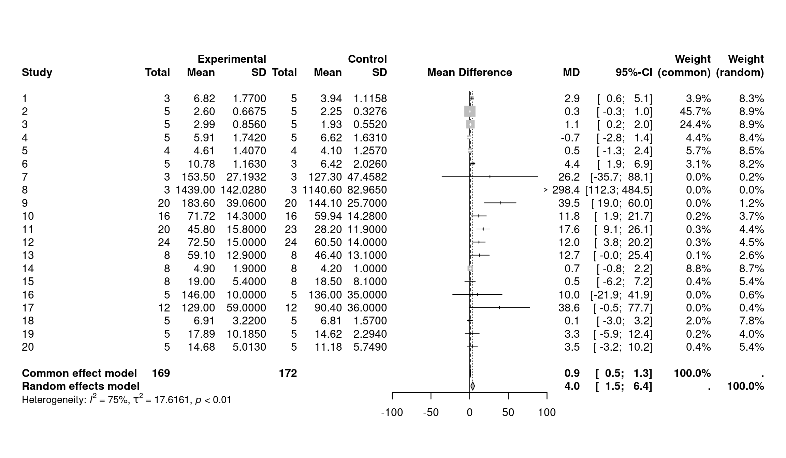Scale 차이를 고려할 때 - SMD
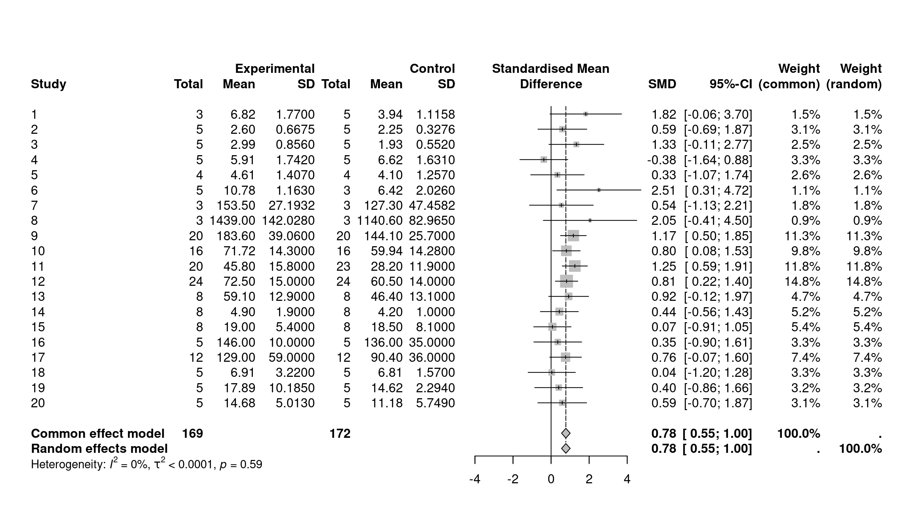R 실습 예제 - Forest plot 옵션 변화 (1)
기본 출력
아무 옵션 없이 기본 forest plot을 출력해봅시다.
고정효과(Common effect)와 랜덤효과(Random effects) 모두 표시
기본 레이아웃 적용
모든 열이 기본값으로 표시
R 실습 예제 - Forest plot 옵션 변화 (1)
기본 출력
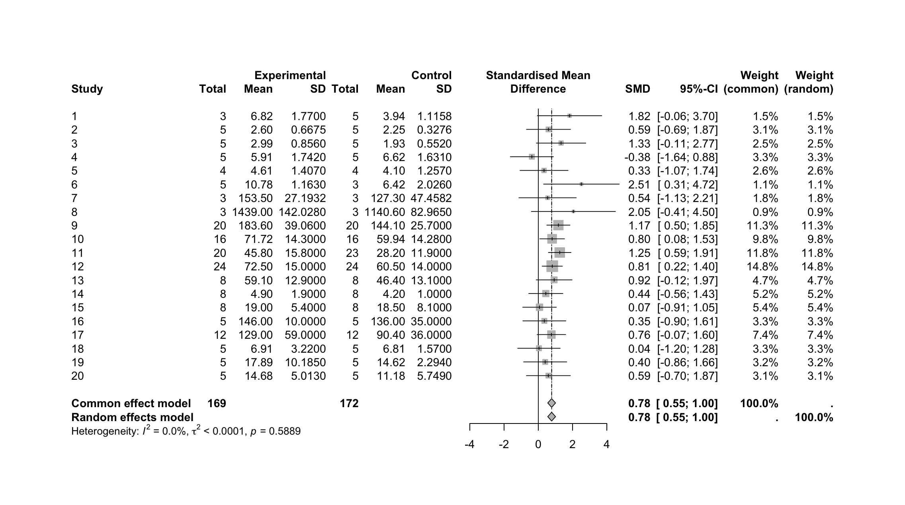R 실습 예제 - Forest plot 옵션 변화 (2)
layout 변경
layout 옵션으로 전체적인 스타일을 변경할 수 있습니다.
| layout 값 | 설명 |
|---|---|
"meta" |
기본 스타일 |
"JAMA" |
JAMA 저널 스타일 |
"RevMan5" |
Cochrane Review Manager 스타일 |
"BMJ" |
BMJ 저널 스타일 |
R 실습 예제 - Forest plot 옵션 변화 (2)
layout 변경
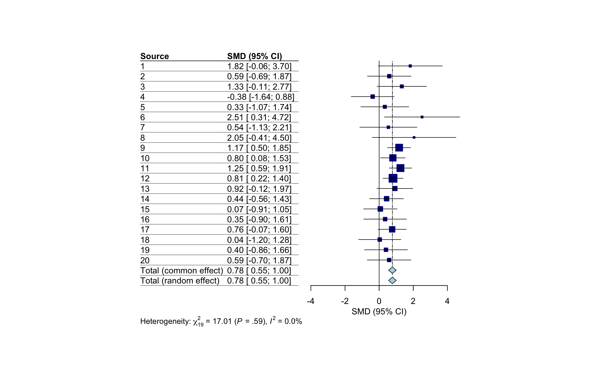R 실습 예제 - Forest plot 옵션 변화 (3)
고정효과 모델 숨기기
common = FALSE로 고정효과 모델을 숨길 수 있습니다.
| 옵션 | 설명 |
|---|---|
common = FALSE |
고정효과 모델 숨김 |
random = FALSE |
랜덤효과 모델 숨김 |
overall = FALSE |
전체 요약 효과 숨김 |
참고: 구버전에서는
comb.fixed,comb.random사용
R 실습 예제 - Forest plot 옵션 변화 (3)
고정효과 모델 숨기기
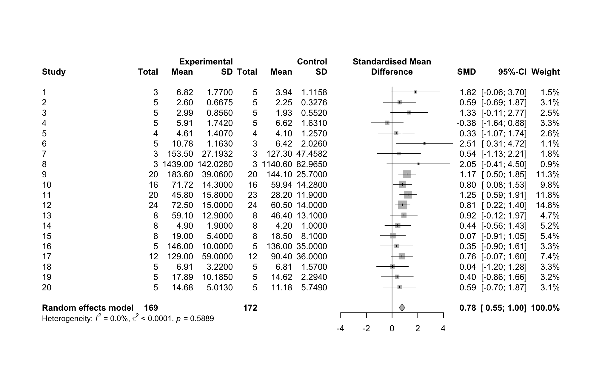R 실습 예제 - Forest plot 옵션 변화 (4)
라벨 텍스트 변경
요약 효과의 라벨을 원하는 텍스트로 변경할 수 있습니다.
| 옵션 | 설명 |
|---|---|
text.random |
랜덤효과 라벨 |
text.common |
고정효과 라벨 |
text.predict |
예측구간 라벨 |
R 실습 예제 - Forest plot 옵션 변화 (4)
라벨 텍스트 변경
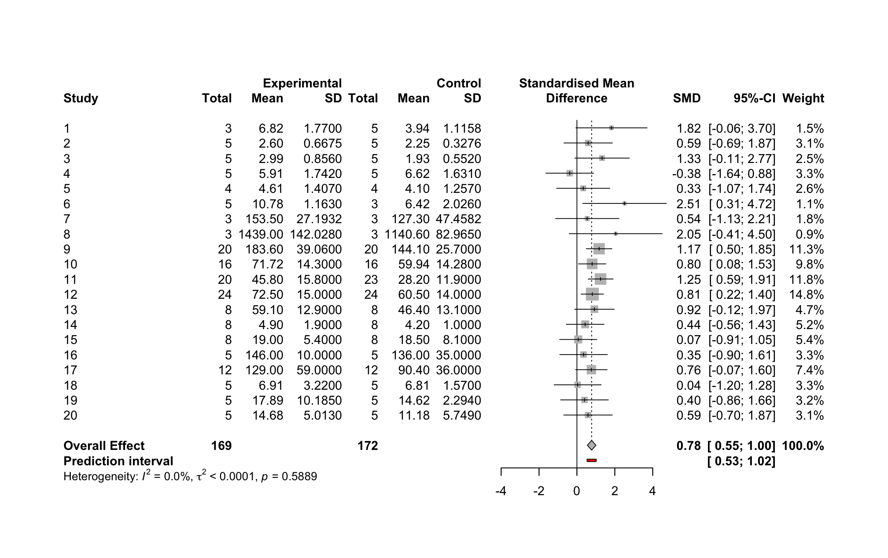R 실습 예제 - Forest plot 옵션 변화 (5)
예측구간(Prediction Interval) 추가
prediction = TRUE로 예측구간을 표시할 수 있습니다.
- 신뢰구간(CI): 모집단 평균 효과의 불확실성
- 예측구간(PI): 향후 개별 연구 효과가 나타날 범위
R 실습 예제 - Forest plot 옵션 변화 (5)
예측구간(Prediction Interval) 추가
R 실습 예제 - Forest plot 옵션 변화 (6)
x축 범위 및 눈금 조정
xlim과 at으로 x축을 조정할 수 있습니다.
| 옵션 | 설명 | 예시 |
|---|---|---|
xlim |
x축 범위 | c(-2, 2) |
at |
눈금 위치 | c(-2, -1, 0, 1, 2) |
ref |
기준선 위치 | 0 (SMD), 1 (OR/RR) |
R 실습 예제 - Forest plot 옵션 변화 (6)
x축 범위 및 눈금 조정
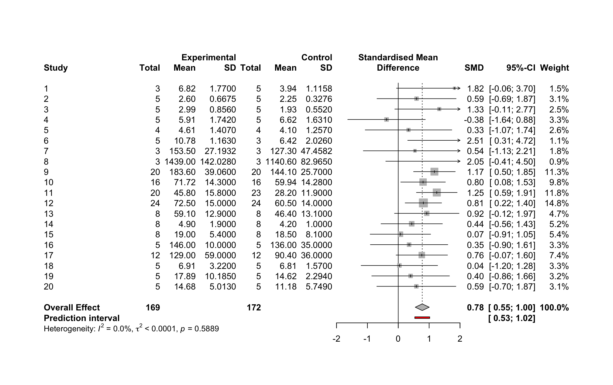R 실습 예제 - Forest plot 옵션 변화 (7)
축 라벨 추가
label.left, label.right로 방향성을 명시할 수 있습니다.
- 기준선 왼쪽/오른쪽이 무엇을 의미하는지 명확히 표시
- 독자가 결과를 해석하기 쉬워짐
R 실습 예제 - Forest plot 옵션 변화 (7)
축 라벨 추가
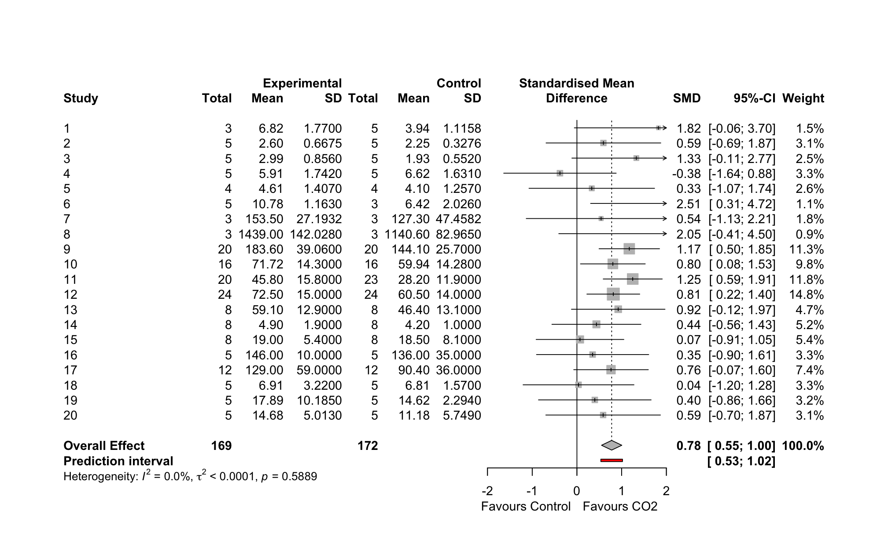R 실습 예제 - Forest plot 옵션 변화 (8)
이질성 통계량 표시 조정
이질성 관련 통계량 표시를 세부 조정할 수 있습니다.
| 옵션 | 표시 내용 |
|---|---|
print.I2 |
I² 통계량 |
print.tau2 |
τ² (between-study variance) |
print.pval.Q |
Q검정 p-value |
R 실습 예제 - Forest plot 옵션 변화 (8)
이질성 통계량 표시 조정
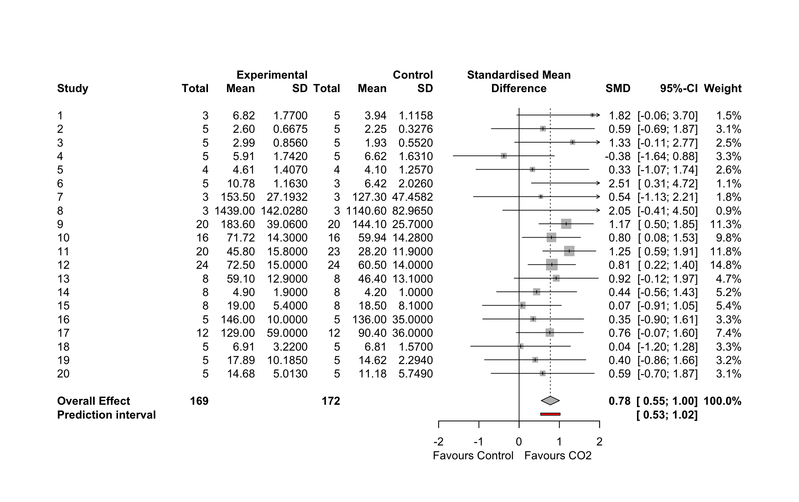R 실습 예제 - Forest plot 옵션 변화 (9)
색상 변경
다이아몬드와 사각형의 색상을 변경할 수 있습니다.
forest(m_smd,
common = FALSE,
text.random = "Overall Effect",
prediction = TRUE,
xlim = c(-2, 2),
at = c(-2, -1, 0, 1, 2),
label.left = "Favours Control",
label.right = "Favours CO2",
digits = 2,
digits.pval = 3,
print.I2 = TRUE,
print.tau2 = TRUE,
print.pval.Q = TRUE,
col.diamond = "steelblue",
col.predict = "darkgray")| 옵션 | 설명 |
|---|---|
col.diamond |
요약 다이아몬드 색상 |
col.diamond.random |
랜덤효과 다이아몬드 색상 |
col.diamond.common |
고정효과 다이아몬드 색상 |
col.square |
개별 연구 사각형 색상 |
col.predict |
예측구간 색상 |
R 실습 예제 - Forest plot 옵션 변화 (9)
색상 변경

R 실습 예제 - Forest plot 옵션 변화 (10)
표시할 열(Column) 선택
leftcols, rightcols로 표시할 정보를 선택합니다.
forest(m_smd,
common = FALSE,
text.random = "Overall Effect",
prediction = TRUE,
xlim = c(-2, 2),
at = c(-2, -1, 0, 1, 2),
label.left = "Favours Control",
label.right = "Favours CO2",
digits = 2,
col.diamond = "steelblue",
col.predict = "darkgray",
leftcols = c("studlab", "n.e", "n.c"),
rightcols = c("effect", "ci", "w.random"))leftcols: 그래프 왼쪽에 표시할 열rightcols: 그래프 오른쪽에 표시할 열
R 실습 예제 - Forest plot 옵션 변화 (10)
표시할 열(Column) 선택
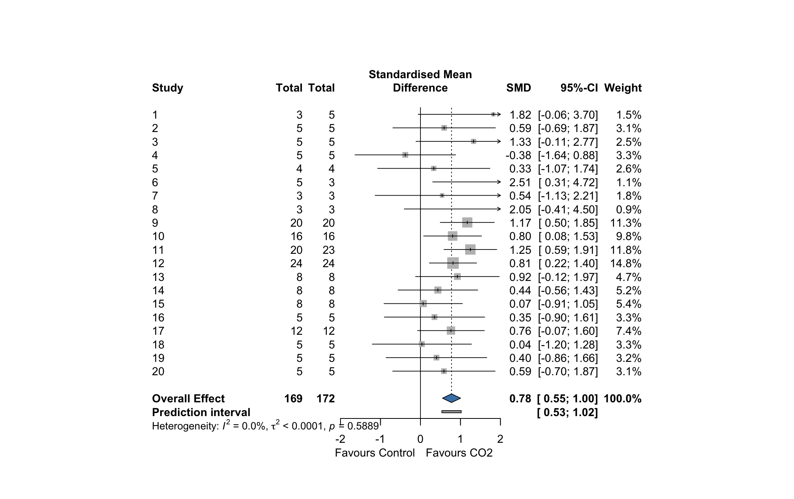R 실습 예제 - Forest plot 옵션 변화 (11)
열 라벨 변경
leftlabs, rightlabs로 열 제목을 변경합니다.
forest(m_smd,
common = FALSE,
text.random = "Overall Effect",
prediction = TRUE,
xlim = c(-2, 2),
at = c(-2, -1, 0, 1, 2),
label.left = "Favours Control",
label.right = "Favours CO2",
digits = 2,
col.diamond = "steelblue",
col.predict = "darkgray",
leftcols = c("studlab", "n.e", "n.c"),
leftlabs = c("Study", "N(Exp)", "N(Ctrl)"),
rightcols = c("effect", "ci", "w.random"),
rightlabs = c("SMD", "95% CI", "Weight(%)"))R 실습 예제 - Forest plot 옵션 변화 (11)
열 라벨 변경
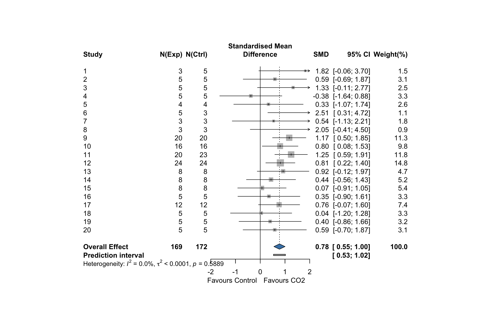R 실습 예제 - Forest plot 옵션 변화 (12)
정렬 순서 변경
sortvar로 연구 표시 순서를 변경할 수 있습니다.
forest(m_smd,
common = FALSE,
text.random = "Overall Effect",
prediction = TRUE,
xlim = c(-2, 2),
at = c(-2, -1, 0, 1, 2),
label.left = "Favours Control",
label.right = "Favours CO2",
digits = 2,
col.diamond = "steelblue",
col.predict = "darkgray",
leftcols = c("studlab", "n.e", "n.c"),
leftlabs = c("Study", "N(Exp)", "N(Ctrl)"),
rightcols = c("effect", "ci", "w.random"),
rightlabs = c("SMD", "95% CI", "Weight(%)"),
sortvar = TE)R 실습 예제 - Forest plot 옵션 변화 (12)
정렬 순서 변경
| sortvar 값 | 정렬 기준 |
|---|---|
TE |
효과크기 순 |
-TE |
효과크기 역순 |
seTE |
표준오차 순 |
year |
연도순 (변수 있을 때) |
R 실습 예제 - Forest plot 옵션 변화 (12)
정렬 순서 변경

Subgroup 분석
특정 변수에 따라 효과가 다른지 확인
Subgroup Forest Plot
Subgroup Forest Plot
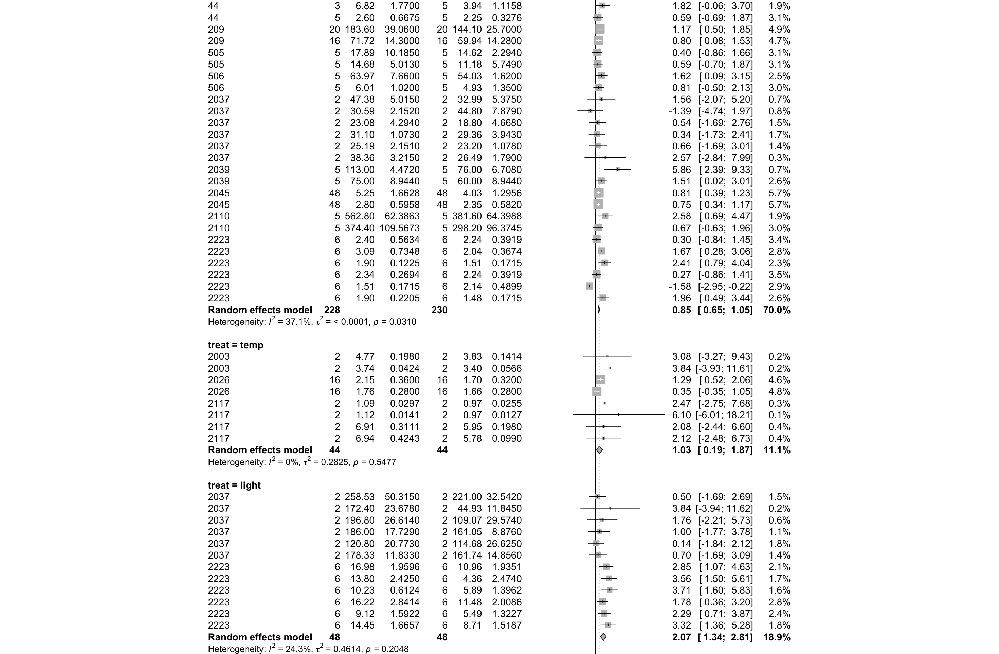Subgroup Forest Plot 옵션
| 옵션 | 설명 | 예시 |
|---|---|---|
subgroup |
subgroup별 표시 | TRUE / FALSE |
print.subgroup.labels |
subgroup 라벨 표시 | TRUE / FALSE |
subgroup.hetstat |
subgroup별 이질성 표시 | TRUE / FALSE |
test.subgroup |
subgroup 간 차이 검정 | TRUE / FALSE |
col.subgroup |
subgroup 라벨 색상 | “blue” |
특정 Subgroup만 선택
특정 Subgroup만 선택
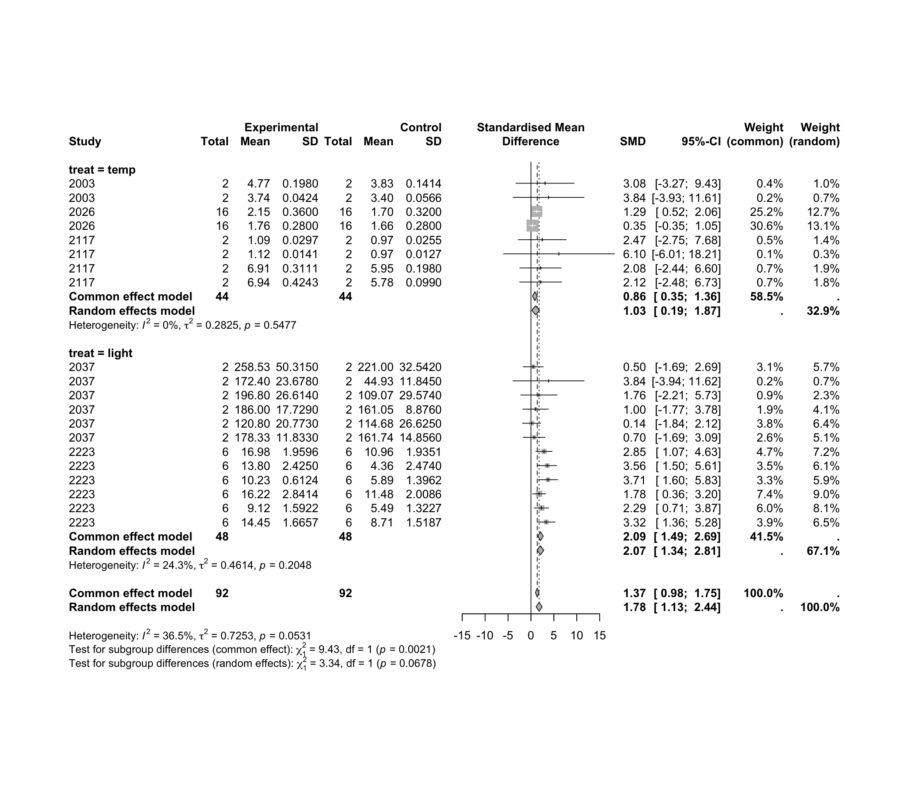Subgroup 결과만 보기
확인할 것:
- 각 subgroup의 요약 효과크기
- subgroup 간 이질성 (between-group heterogeneity)
Funnel Plot 실습 데이터
pubbias_data <- data.frame(
study = paste("Study", 1:15),
n.e = c(120, 85, 90, 150, 45, 60, 200, 35, 75, 100, 40, 55, 180, 65, 95),
mean.e = c(52, 48, 55, 51, 62, 58, 50, 68, 54, 53, 65, 59, 49, 56, 52),
sd.e = c(12, 15, 14, 11, 18, 16, 10, 20, 14, 13, 19, 17, 11, 15, 13),
n.c = c(118, 82, 88, 148, 47, 62, 198, 33, 73, 102, 42, 58, 178, 63, 93),
mean.c = c(48, 46, 50, 48, 52, 50, 48, 55, 49, 49, 53, 51, 47, 50, 48),
sd.c = c(13, 14, 15, 12, 17, 15, 11, 19, 13, 14, 18, 16, 10, 14, 12)
)
m <- metacont(
n.e = n.e, mean.e = mean.e, sd.e = sd.e,
n.c = n.c, mean.c = mean.c, sd.c = sd.c,
studlab = study,
data = pubbias_data,
sm = "SMD",
random = TRUE,
common = FALSE
)기본 Funnel Plot
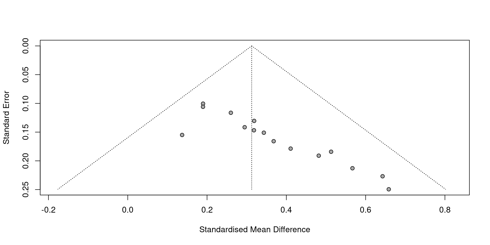기본 Funnel Plot
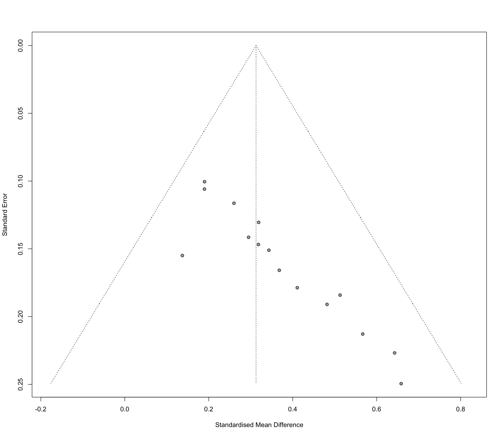funnel() 주요 옵션
| 옵션 | 설명 | 예시 |
|---|---|---|
studlab |
연구명 표시 | TRUE / FALSE |
xlim |
X축 범위 | c(-2, 2) |
ylim |
Y축 범위 | c(0, 1) |
xlab |
X축 라벨 | “SMD” |
ylab |
Y축 라벨 | “Standard Error” |
contour.levels |
등고선 수준 | c(0.9, 0.95, 0.99) |
col.contour |
등고선 색상 | c(“gray75”, “gray85”, “gray95”) |
funnel() 스타일 옵션
| 옵션 | 설명 | 예시 |
|---|---|---|
pch |
점 모양 | 19 |
col |
점 색상 | “blue” |
bg |
점 배경색 | “lightblue” |
cex |
점 크기 | 1.5 |
lwd |
선 두께 | 2 |
lty |
선 스타일 | 1=실선, 2=점선 |
연구명 표시
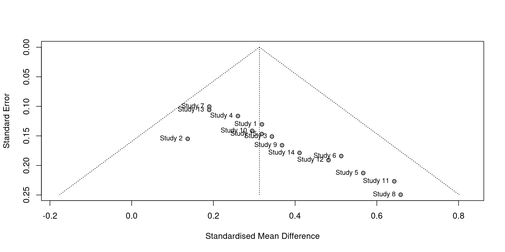축 범위 및 라벨 설정
축 범위 및 라벨 설정
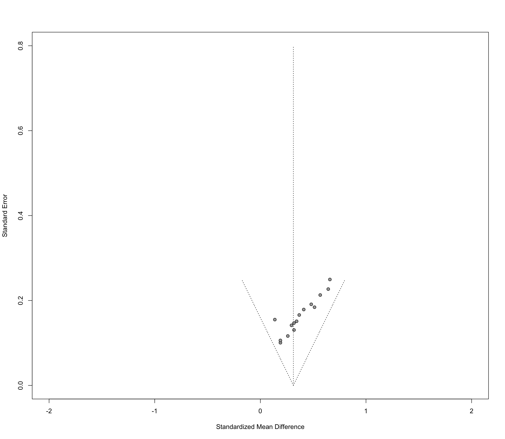Contour-Enhanced Funnel Plot
| 영역 | 의미 |
|---|---|
| 진한 회색 | p < 0.01 |
| 중간 회색 | 0.01 ≤ p < 0.05 |
| 연한 회색 | 0.05 ≤ p < 0.10 |
Contour-Enhanced Funnel Plot

점/선 스타일 변경
pch 값: 1=빈 원, 15=사각형, 16=채운 원, 17=삼각형, 19=채운 원, 21=테두리 원
점/선 스타일 변경
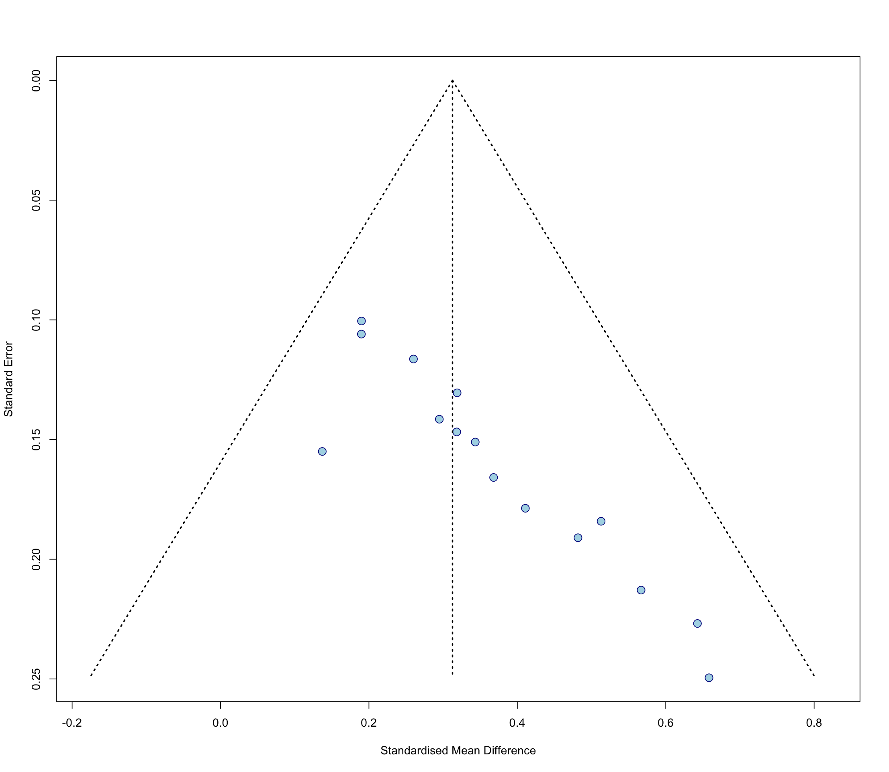종합 예제: 완성된 Funnel Plot
종합 예제: 완성된 Funnel Plot
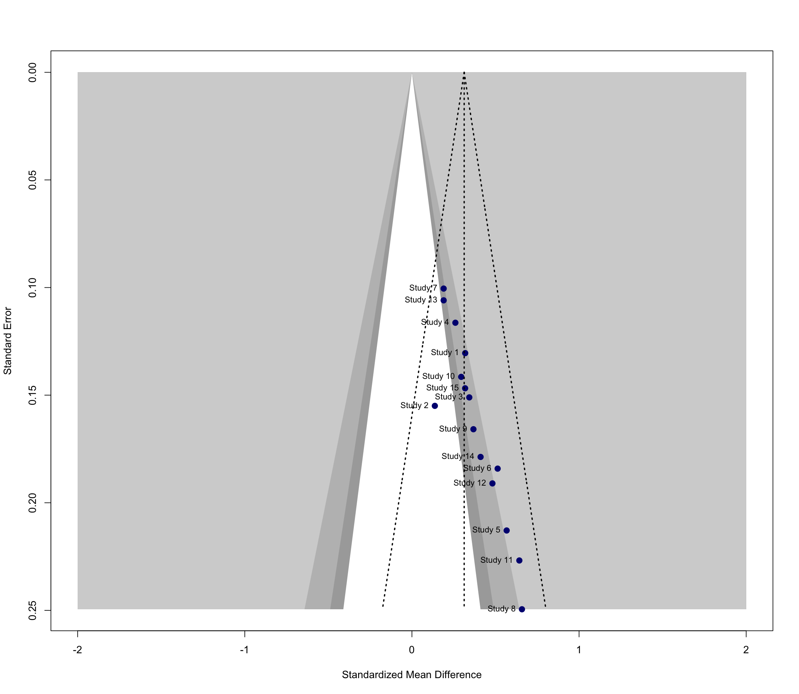Egger’s Test
Linear regression test of funnel plot asymmetry
Test result: t = 7.30, df = 13, p-value < 0.0001
Bias estimate: 3.1811 (SE = 0.4359)
Details:
- multiplicative residual heterogeneity variance (tau^2 = 0.1845)
- predictor: standard error
- weight: inverse variance
- reference: Egger et al. (1997), BMJ해석:
- p < 0.10 → 비대칭성 있음 (출판 편향 의심)
- p ≥ 0.10 → 비대칭성 증거 없음
method.bias 옵션
| 옵션 | 설명 |
|---|---|
method.bias = "Egger" |
Egger’s regression test |
method.bias = "Begg" |
Begg’s rank correlation |
method.bias = "Thompson" |
Thompson-Sharp test |
plotit = TRUE |
시각화 |
Trim and Fill
k0: 추정된 누락 연구 수- 보정된 요약 효과크기 확인
Trim and Fill
SMD 95%-CI %W(random)
Study 1 0.3188 [ 0.0631; 0.5746] 7.3
Study 2 0.1371 [-0.1666; 0.4409] 5.2
Study 3 0.3433 [ 0.0473; 0.6393] 5.5
Study 4 0.2600 [ 0.0320; 0.4881] 9.2
Study 5 0.5668 [ 0.1495; 0.9840] 2.8
Study 6 0.5129 [ 0.1520; 0.8738] 3.7
Study 7 0.1899 [-0.0070; 0.3869] 12.4
Study 8 0.6583 [ 0.1693; 1.1473] 2.0
Study 9 0.3680 [ 0.0430; 0.6931] 4.6
Study 10 0.2949 [ 0.0175; 0.5722] 6.2
Study 11 0.6427 [ 0.1982; 1.0873] 2.4
Study 12 0.4817 [ 0.1074; 0.8561] 3.4
Study 13 0.1898 [-0.0178; 0.3975] 11.1
Study 14 0.4109 [ 0.0606; 0.7611] 3.9
Study 15 0.3183 [ 0.0306; 0.6061] 5.8
Filled: Study 12 0.0449 [-0.3294; 0.4193] 3.4
Filled: Study 6 0.0138 [-0.3471; 0.3747] 3.7
Filled: Study 5 -0.0401 [-0.4574; 0.3771] 2.8
Filled: Study 11 -0.1161 [-0.5606; 0.3285] 2.4
Filled: Study 8 -0.1317 [-0.6207; 0.3573] 2.0
Number of studies: k = 20 (with 5 added studies)
Number of observations: o = 3257 (o.e = 1630, o.c = 1627)
SMD 95%-CI z p-value
Random effects model 0.2633 [0.1940; 0.3327] 7.44 < 0.0001
Quantifying heterogeneity (with 95%-CIs):
tau^2 < 0.0001 [0.0000; 0.0736]; tau = 0.0020 [0.0000; 0.2713]
I^2 = 22.0% [0.0%; 54.7%]; H = 1.13 [1.00; 1.49]
Test of heterogeneity:
Q d.f. p-value
24.37 19 0.1823
Details of meta-analysis methods:
- Inverse variance method
- Restricted maximum-likelihood estimator for tau^2
- Q-Profile method for confidence interval of tau^2 and tau
- Calculation of I^2 based on Q
- Trim-and-fill method to adjust for funnel plot asymmetry (L-estimator)Trim and Fill Funnel Plot
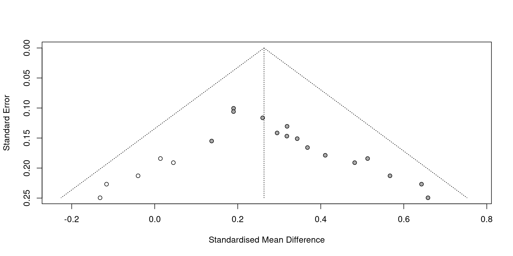- 흰 원(○): 원래 연구
- 검은 원(●): 추정된 누락 연구
Trim and Fill 옵션
보정 전후 비교
원래: 0.3126432
보정: 0.2633364 Executive summary
동일한 결과지표를 가진 연구들을 합친다
Mean, proportion: 그룹 1개
Ratio(RR, OR, ROM), difference(MD, SMD): 그룹 2개 비교
그룹별 Mean(sd) 또는 Event/N 값이 필요, Measure(95%CI) 만 있어도 가능.
Inversed variance: Fixed effect vs Random effect
- 분산이 작은 연구에 가중치를 주지만, 한 연구의 영향력이 너무 커지는건 싫다.
Forestplot 으로 표시한다
- 검증위해
funnel plot, heterogeneity 지표 필요
openstat.ai 에서 메타분석 수행 가능
- R meta 패키지로도 구현가능
감사합니다.

openstat.ai